Overview
The yahoofinancer package provides a tidyverse-first,
type-stable interface for querying market data from Yahoo Finance. This
cookbook compiles 15 end-to-end recipes ranging from baseline data
extraction to technical indicators, quantitative modeling, risk
management, and portfolio performance analysis.
1. Download Historical Equity Prices
Retrieve daily Open, High, Low, Close, Adjusted Close, and Volume (OHLCV) price series for a single security using either functional or object-oriented (R6) interfaces.
# Functional API
aapl_prices <- yf_download_prices(
tickers = "AAPL",
period = "1y",
interval = "1d"
)
head(aapl_prices)
#> # A tibble: 6 × 8
#> symbol date open high low close adj_close volume
#> <chr> <dttm> <dbl> <dbl> <dbl> <dbl> <dbl> <dbl>
#> 1 AAPL 2025-08-25 13:30:00 226. 229. 226. 227. 226. 30983100
#> 2 AAPL 2025-08-26 13:30:00 227. 229. 225. 229. 228. 54575100
#> 3 AAPL 2025-08-27 13:30:00 229. 231. 228. 230. 230. 31259500
#> 4 AAPL 2025-08-28 13:30:00 231. 233. 229. 233. 232. 38074700
#> 5 AAPL 2025-08-29 13:30:00 233. 233. 231. 232. 231. 39418400
#> 6 AAPL 2025-09-02 13:30:00 229. 231. 227. 230. 229. 44075600
# R6 Class Interface
aapl_obj <- Ticker$new("AAPL")
aapl_history <- aapl_obj$get_history(period = "1y", interval = "1d")
head(aapl_history)
#> # A tibble: 6 × 8
#> symbol date open high low close adj_close volume
#> <chr> <dttm> <dbl> <dbl> <dbl> <dbl> <dbl> <dbl>
#> 1 AAPL 2025-08-25 13:30:00 226. 229. 226. 227. 226. 30983100
#> 2 AAPL 2025-08-26 13:30:00 227. 229. 225. 229. 228. 54575100
#> 3 AAPL 2025-08-27 13:30:00 229. 231. 228. 230. 230. 31259500
#> 4 AAPL 2025-08-28 13:30:00 231. 233. 229. 233. 232. 38074700
#> 5 AAPL 2025-08-29 13:30:00 233. 233. 231. 232. 231. 39418400
#> 6 AAPL 2025-09-02 13:30:00 229. 231. 227. 230. 229. 44075600Variations & Tips
-
Explicit Date Boundaries: Query fixed historical
windows using
startandend:
aapl_custom <- yf_download_prices(
tickers = "AAPL",
start = "2024-01-01",
end = "2024-12-31",
interval = "1d"
)- Inspect Security Metadata via R6:
cat("Currency: ", aapl_obj$currency, "\n")
#> Currency: USD
cat("Exchange: ", aapl_obj$exchange_name, "\n")
#> Exchange: NMS
cat("Timezone: ", aapl_obj$timezone, "\n")
#> Timezone: EDT2. Batch Download Multiple Tickers
Retrieve and stack price series for a diversified universe of equities into a single long-format tibble in one vectorized call.
symbols <- c("AAPL", "MSFT", "GOOGL", "NVDA", "TCS.NS")
basket_prices <- yf_download_prices(
tickers = symbols,
period = "6mo",
interval = "1d"
)
# Inspect observation counts per ticker
basket_prices |>
count(symbol)
#> # A tibble: 5 × 2
#> symbol n
#> <chr> <int>
#> 1 AAPL 125
#> 2 GOOGL 125
#> 3 MSFT 125
#> 4 NVDA 125
#> 5 TCS.NS 125Variations & Tips
-
Faceted Multi-Asset Price Plot: Compare absolute
price trajectories across assets using
ggplot2:
ggplot(basket_prices, aes(x = date, y = adj_close, color = symbol)) +
geom_line(show.legend = FALSE) +
facet_wrap(~ symbol, scales = "free_y") +
labs(
title = "Historical Price Series by Security",
x = "Date",
y = "Adjusted Close Price"
) +
theme_minimal()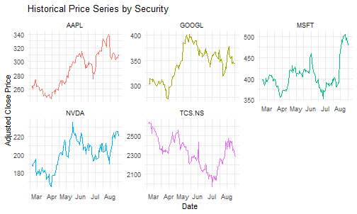
3. Intraday Price Series & Timeframes
Retrieve high-frequency intraday candles (1m,
5m, 15m, 60m) to examine intraday
volatility, liquidity patterns, and trading microstructure.
intraday_5m <- yf_download_prices(
tickers = "MSFT",
period = "5d",
interval = "5m"
)
head(intraday_5m)
#> # A tibble: 6 × 8
#> symbol date open high low close adj_close volume
#> <chr> <dttm> <dbl> <dbl> <dbl> <dbl> <dbl> <dbl>
#> 1 MSFT 2026-08-18 13:30:00 482. 483. 477. 479. 479. 1477683
#> 2 MSFT 2026-08-18 13:35:00 479. 483. 479. 483. 483. 388264
#> 3 MSFT 2026-08-18 13:40:00 483. 484. 483. 483. 483. 437979
#> 4 MSFT 2026-08-18 13:45:00 483. 483. 482. 482. 482. 238777
#> 5 MSFT 2026-08-18 13:50:00 482. 483. 480. 482. 482. 477575
#> 6 MSFT 2026-08-18 13:55:00 482. 482. 479. 480. 480. 351820Variations & Tips
- Hourly Candle Tracking: Download 1-hour candles over the past month:
intraday_1h <- yf_download_prices(
tickers = "MSFT",
period = "1mo",
interval = "60m"
)- Intraday Volume Distribution: Visualize intraday trading volume bars:
ggplot(intraday_5m, aes(x = date, y = volume)) +
geom_col(fill = "#4f46e5", alpha = 0.8) +
scale_y_continuous(labels = label_number(scale_cut = cut_short_scale())) +
labs(
title = "MSFT 5-Minute Intraday Volume",
x = "Timestamp (UTC)",
y = "Volume"
) +
theme_minimal()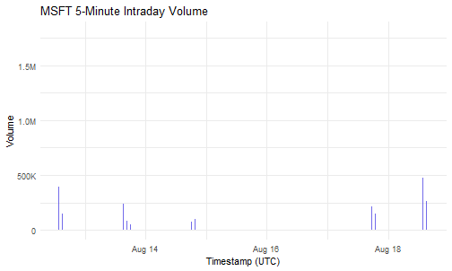
4. Real-Time Market Overview & Regional Filtering
Retrieve live market snapshots across international equity indices, currencies, and commodities, then filter for specific regional exchanges.
market_overview <- get_market_summary(as_tibble = TRUE)
# Filter for benchmark indices and currencies in market overview
us_overview <- market_overview |>
filter(grepl("S&P|Nasdaq|Dow|EUR/USD|Gold|Crude", short_name, ignore.case = TRUE))
print(us_overview)
#> # A tibble: 6 × 9
#> symbol short_name regular_market_price regular_market_change
#> <chr> <chr> <dbl> <dbl>
#> 1 ES=F S&P Futures 7697 27.2
#> 2 YM=F Dow Futures 53689 200
#> 3 NQ=F Nasdaq Futures 29330 224.
#> 4 CL=F Crude Oil 82.6 -2.41
#> 5 GC=F Gold 4696. -1.90
#> 6 EURUSD=X EUR/USD 1.17 -0.000408
#> # ℹ 5 more variables: regular_market_change_percent <dbl>,
#> # regular_market_previous_close <dbl>, market_state <chr>, exchange <chr>,
#> # market_time <dttm>Variations & Tips
- Filter for Commodities & Crypto:
commodities_crypto <- market_overview |>
filter(grepl("Gold|Crude|Silver|BTC|ETH", short_name, ignore.case = TRUE))- Filter for Major European Indices:
european_market <- market_overview |>
filter(grepl("DAX|FTSE|CAC|ESTX", short_name, ignore.case = TRUE))- Discover Trending Securities: Retrieve real-time trending symbols for a target country:
trending_us <- get_trending("US", count = 5)
print(trending_us)
#> [1] "AVGO" "SNOW" "HPE" "NTAP" "PLTR"5. Download Benchmark Index History
Retrieve historical price series for major benchmark indices
(^GSPC, ^IXIC, ^NSEI,
^BSESN) and normalize prices to a common base of 100 for
comparative performance tracking.
benchmark_symbols <- c("^GSPC", "^IXIC", "^NSEI", "^BSESN")
benchmark_prices <- yf_download_prices(
tickers = benchmark_symbols,
period = "1y",
interval = "1d"
)
# Normalize price levels (Base = 100)
normalized_indices <- benchmark_prices |>
group_by(symbol) |>
arrange(date, .by_group = TRUE) |>
mutate(indexed_price = (close / first(close)) * 100) |>
ungroup()
ggplot(normalized_indices, aes(x = date, y = indexed_price, color = symbol)) +
geom_line(linewidth = 0.8) +
labs(
title = "Global Benchmark Performance (Base = 100)",
x = "Date",
y = "Normalized Growth",
color = "Index"
) +
theme_minimal()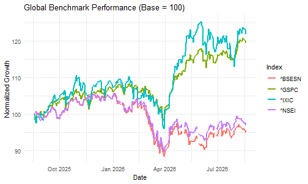
Variations & Tips
- Indian Sectoral Indices: Track major sector sub-indices:
sectoral_symbols <- c("^CNXIT", "^NSEBANK", "^CNXAUTO")
sectoral_prices <- yf_download_prices(sectoral_symbols, period = "1y", interval = "1d")- Index Class R6 Query & Latest Quote:
nifty <- Index$new("^NSEI")
nifty_quote <- yf_get_index_quotes("^NSEI")
cat("Index Symbol: ", nifty$symbol, "\n")
#> Index Symbol: ^NSEI
cat("Latest Close: ", tail(nifty_quote$close, 1), "\n")
#> Latest Close: 24219.16. Historical Currency & Forex Conversions
Convert foreign asset valuations into a local base currency by retrieving spot and historical foreign exchange rates via ISO 4217 currency pairs.
# 1. Fetch Apple USD prices
aapl <- yf_download_prices("AAPL", period = "6mo") |>
mutate(date_day = as.Date(date))
# 2. Fetch USD/INR exchange rates
usd_inr <- currency_converter("USD", "INR", period = "6mo") |>
mutate(date_day = as.Date(date)) |>
select(date_day, fx_rate = close)
# 3. Join and compute share price in INR
aapl_inr <- aapl |>
inner_join(usd_inr, by = "date_day") |>
mutate(close_inr = close * fx_rate) |>
select(date_day, close_usd = close, fx_rate, close_inr)
head(aapl_inr)
#> # A tibble: 6 × 4
#> date_day close_usd fx_rate close_inr
#> <date> <dbl> <dbl> <dbl>
#> 1 2026-02-25 274. 90.9 24932.
#> 2 2026-02-26 273. 91.0 24825.
#> 3 2026-02-27 264. 91.0 24042.
#> 4 2026-03-02 265. 91.1 24111.
#> 5 2026-03-03 264. 91.6 24150.
#> 6 2026-03-04 263. 92.0 24154.Variations & Tips
- Inspect Available ISO Currency Codes:
supported_currencies <- get_currencies()
head(supported_currencies)
#> short_name long_name symbol local_long_name
#> 1 FJD Fijian Dollar FJD Fijian Dollar
#> 2 MXN Mexican Peso MXN Mexican Peso
#> 3 SCR Seychellois Rupee SCR Seychellois Rupee
#> 4 CDF Congolese Franc CDF Congolese Franc
#> 5 BBD Barbadian Dollar BBD Barbadian Dollar
#> 6 GTQ Guatemalan Quetzal GTQ Guatemalan Quetzal-
Direct Forex Pair Download: Query exchange rates
using the
=Xticker convention:
fx_basket <- yf_download_prices(c("EURUSD=X", "GBPUSD=X", "USDJPY=X"), period = "3mo")7. Validate Ticker Symbols Before Pipelines
Sanitize, filter, and audit arbitrary universes of ticker symbols prior to running batch download pipelines to prevent failures caused by delisted or malformed symbols.
raw_symbols <- c("AAPL", "INVALID_XYZ", "TCS.NS", "NOT_REAL_123", "MSFT")
# 1. Return valid tickers only
clean_symbols <- validate(raw_symbols)
print(clean_symbols)
#> [1] "AAPL" "TCS.NS" "MSFT"
# 2. Named logical audit vector
validation_status <- validate(raw_symbols, return_logical = TRUE)
print(validation_status)
#> AAPL INVALID_XYZ TCS.NS NOT_REAL_123 MSFT
#> TRUE FALSE TRUE FALSE TRUE
# 3. Clean inline before download
clean_prices <- yf_download_prices(
tickers = validate(raw_symbols),
period = "3mo"
)
head(clean_prices)
#> # A tibble: 6 × 8
#> symbol date open high low close adj_close volume
#> <chr> <dttm> <dbl> <dbl> <dbl> <dbl> <dbl> <dbl>
#> 1 AAPL 2026-05-26 13:30:00 310. 312. 308. 308. 308. 48000500
#> 2 AAPL 2026-05-27 13:30:00 308. 313. 308. 311. 311. 50430900
#> 3 AAPL 2026-05-28 13:30:00 311. 313. 310. 313. 312. 48220400
#> 4 AAPL 2026-05-29 13:30:00 312. 315 310. 312. 312. 70026800
#> 5 AAPL 2026-06-01 13:30:00 310. 311. 305. 306. 306. 48849900
#> 6 AAPL 2026-06-02 13:30:00 307. 315. 307. 315. 315. 445347008. Calculate Daily Percentage Returns
Calculate simple discrete percentage returns and continuous log
returns across multiple securities using standardized adjusted close
prices (adj_close).
symbols <- c("AAPL", "MSFT", "GOOGL")
returns_df <- yf_download_prices(symbols, period = "1y", interval = "1d") |>
group_by(symbol) |>
arrange(date, .by_group = TRUE) |>
mutate(
daily_return = (adj_close / lag(adj_close)) - 1,
log_return = log(adj_close / lag(adj_close))
) |>
filter(!is.na(daily_return)) |>
ungroup()
head(returns_df)
#> # A tibble: 6 × 10
#> symbol date open high low close adj_close volume
#> <chr> <dttm> <dbl> <dbl> <dbl> <dbl> <dbl> <dbl>
#> 1 AAPL 2025-08-26 13:30:00 227. 229. 225. 229. 228. 54575100
#> 2 AAPL 2025-08-27 13:30:00 229. 231. 228. 230. 230. 31259500
#> 3 AAPL 2025-08-28 13:30:00 231. 233. 229. 233. 232. 38074700
#> 4 AAPL 2025-08-29 13:30:00 233. 233. 231. 232. 231. 39418400
#> 5 AAPL 2025-09-02 13:30:00 229. 231. 227. 230. 229. 44075600
#> 6 AAPL 2025-09-03 13:30:00 237. 239. 234. 238. 238. 66427800
#> # ℹ 2 more variables: daily_return <dbl>, log_return <dbl>Variations & Tips
- Visualizing Return Distributions: Plot overlapping density curves to evaluate return dispersion and tail thickness:
ggplot(returns_df, aes(x = daily_return, fill = symbol)) +
geom_density(alpha = 0.4) +
scale_x_continuous(labels = label_percent(accuracy = 0.1)) +
labs(
title = "Daily Return Distributions",
x = "Daily Percentage Return",
y = "Density",
fill = "Ticker"
) +
theme_minimal()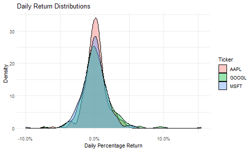
- Summary Statistics Table:
returns_summary <- returns_df |>
group_by(symbol) |>
summarise(
trading_days = n(),
mean_daily = mean(daily_return),
sd_daily = sd(daily_return),
annual_return = mean_daily * 252,
annual_vol = sd_daily * sqrt(252)
)
print(returns_summary)
#> # A tibble: 3 × 6
#> symbol trading_days mean_daily sd_daily annual_return annual_vol
#> <chr> <int> <dbl> <dbl> <dbl> <dbl>
#> 1 AAPL 250 0.00139 0.0158 0.350 0.251
#> 2 GOOGL 250 0.00227 0.0206 0.573 0.327
#> 3 MSFT 250 0.0000991 0.0204 0.0250 0.3239. Multi-Asset Return Correlation Matrix
Reshape multi-asset return series into a wide format to compute pairwise Pearson correlation coefficients, assess sector co-movement, and evaluate diversification benefits.
symbols <- c("AAPL", "MSFT", "NVDA", "GLD", "^GSPC")
prices <- yf_download_prices(symbols, period = "1y", interval = "1d")
returns_matrix <- prices |>
group_by(symbol) |>
arrange(date, .by_group = TRUE) |>
mutate(daily_return = (adj_close / lag(adj_close)) - 1) |>
filter(!is.na(daily_return)) |>
ungroup() |>
select(date, symbol, daily_return) |>
pivot_wider(names_from = symbol, values_from = daily_return)
cor_matrix <- cor(select(returns_matrix, -date), use = "pairwise.complete.obs")
round(cor_matrix, 2)
#> AAPL GLD MSFT NVDA ^GSPC
#> AAPL 1.00 0.09 0.11 0.11 0.38
#> GLD 0.09 1.00 0.08 0.22 0.32
#> MSFT 0.11 0.08 1.00 0.27 0.38
#> NVDA 0.11 0.22 0.27 1.00 0.66
#> ^GSPC 0.38 0.32 0.38 0.66 1.00Variations & Tips
-
Correlation Heatmap: Visualize asset correlation
tiles using
ggplot2:
cor_long <- as.data.frame(cor_matrix) |>
mutate(asset1 = rownames(cor_matrix)) |>
pivot_longer(-asset1, names_to = "asset2", values_to = "correlation")
ggplot(cor_long, aes(x = asset1, y = asset2, fill = correlation)) +
geom_tile(color = "white") +
geom_text(aes(label = round(correlation, 2)), color = "black", size = 4) +
scale_fill_gradient2(
low = "#d73027", mid = "#ffffbf", high = "#1a9850",
midpoint = 0, limit = c(-1, 1), name = "Correlation"
) +
labs(title = "Asset Return Correlation Matrix", x = NULL, y = NULL) +
theme_minimal()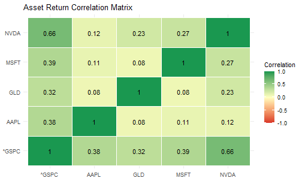
- Rolling 60-Day Pairwise Correlation: Track correlation stability over time:
rolling_cor <- returns_matrix |>
mutate(
roll_cor_aapl_gspc = rollapplyr(
data = cbind(AAPL, `^GSPC`),
width = 60,
FUN = function(x) cor(x[, 1], x[, 2], use = "complete.obs"),
by.column = FALSE,
fill = NA
)
)10. Compute Moving Averages & Trend Crossovers
Calculate 50-day and 200-day Simple Moving Averages (SMA) to classify market trend regimes and detect Golden Cross and Death Cross crossover signals.
prices <- yf_download_prices("AAPL", period = "2y", interval = "1d")
sma_df <- prices |>
arrange(date) |>
mutate(
sma_50 = rollmeanr(adj_close, k = 50, fill = NA),
sma_200 = rollmeanr(adj_close, k = 200, fill = NA),
regime = case_when(
sma_50 > sma_200 ~ "Bullish (SMA50 > SMA200)",
sma_50 < sma_200 ~ "Bearish (SMA50 < SMA200)",
TRUE ~ "Neutral"
),
signal = case_when(
sma_50 > sma_200 & lag(sma_50) <= lag(sma_200) ~ "Golden Cross",
sma_50 < sma_200 & lag(sma_50) >= lag(sma_200) ~ "Death Cross",
TRUE ~ NA_character_
)
)
tail(sma_df |> select(date, close, adj_close, sma_50, sma_200, regime, signal), 6)
#> # A tibble: 6 × 7
#> date close adj_close sma_50 sma_200 regime signal
#> <dttm> <dbl> <dbl> <dbl> <dbl> <chr> <chr>
#> 1 2026-08-17 13:30:00 306. 306. 309. 280. Bullish (SMA50 > SM… <NA>
#> 2 2026-08-18 13:30:00 310. 310. 309. 280. Bullish (SMA50 > SM… <NA>
#> 3 2026-08-19 13:30:00 317. 317. 309. 281. Bullish (SMA50 > SM… <NA>
#> 4 2026-08-20 13:30:00 311. 311. 310. 281. Bullish (SMA50 > SM… <NA>
#> 5 2026-08-21 13:30:00 309. 309. 310. 281. Bullish (SMA50 > SM… <NA>
#> 6 2026-08-24 13:30:00 310. 310. 310. 281. Bullish (SMA50 > SM… <NA>Variations & Tips
- Moving Average Overlay Chart:
ggplot(filter(sma_df, !is.na(sma_200)), aes(x = date)) +
geom_line(aes(y = adj_close), color = "gray60", alpha = 0.7, linewidth = 0.5) +
geom_line(aes(y = sma_50, color = "50-day SMA"), linewidth = 0.9) +
geom_line(aes(y = sma_200, color = "200-day SMA"), linewidth = 0.9) +
scale_color_manual(
name = "Indicators",
values = c("50-day SMA" = "#1f77b4", "200-day SMA" = "#d62728")
) +
labs(
title = "AAPL Price Trend & Moving Averages",
subtitle = "50-Day vs. 200-Day Simple Moving Average",
x = "Date",
y = "Adjusted Price (USD)"
) +
theme_minimal() +
theme(legend.position = "bottom")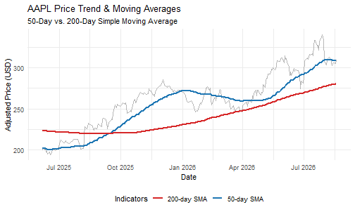
- Exponential Moving Average (EMA): Weight recent observations higher:
alpha <- 2 / (20 + 1)
sma_df <- sma_df |>
mutate(ema_20 = stats::filter(adj_close * alpha, 1 - alpha, method = "recursive", sides = 1))11. Calculate Historical & Maximum Drawdown (MDD)
Compute running peak prices and peak-to-trough percentage drawdowns to quantify historical capital loss risk, tail risk, and maximum drawdown limits.
prices <- yf_download_prices("NVDA", period = "5y", interval = "1d")
drawdown_df <- prices |>
arrange(date) |>
mutate(
peak_price = cummax(adj_close),
drawdown = (adj_close - peak_price) / peak_price
)
max_dd_val <- min(drawdown_df$drawdown, na.rm = TRUE)
worst_row <- drawdown_df |> filter(drawdown == max_dd_val) |> slice(1)
cat("Maximum Drawdown (MDD):", sprintf("%.2f%%", max_dd_val * 100), "\n")
#> Maximum Drawdown (MDD): -66.34%
cat("Trough Date: ", format(worst_row$date, "%Y-%m-%d"), "\n")
#> Trough Date: 2022-10-14
cat("Trough Price: ", round(worst_row$adj_close, 2), "\n")
#> Trough Price: 11.2
cat("Previous Peak Price: ", round(worst_row$peak_price, 2), "\n")
#> Previous Peak Price: 33.27Variations & Tips
- Underwater Area Chart:
ggplot(drawdown_df, aes(x = date, y = drawdown)) +
geom_area(fill = "#d9534f", alpha = 0.4) +
geom_line(color = "#d9534f", linewidth = 0.7) +
scale_y_continuous(labels = label_percent()) +
labs(
title = "NVDA Historical Drawdown (Underwater Chart)",
subtitle = paste0("Max Drawdown: ", sprintf("%.2f%%", max_dd_val * 100)),
x = "Date",
y = "Drawdown from Peak"
) +
theme_minimal()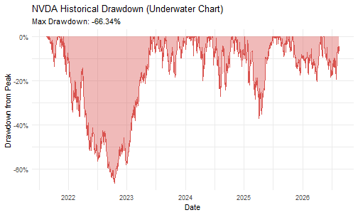
- Multi-Asset MDD Comparison: Compare worst-case drawdowns across securities:
multi_basket <- yf_download_prices(c("AAPL", "MSFT", "GOOGL", "^GSPC"), period = "5y")
mdd_comparison <- multi_basket |>
group_by(symbol) |>
arrange(date, .by_group = TRUE) |>
mutate(
peak = cummax(adj_close),
dd = (adj_close - peak) / peak
) |>
summarise(
max_drawdown = min(dd, na.rm = TRUE),
current_drawdown = last(dd)
) |>
arrange(max_drawdown)
print(mdd_comparison)
#> # A tibble: 4 × 3
#> symbol max_drawdown current_drawdown
#> <chr> <dbl> <dbl>
#> 1 GOOGL -0.443 -0.135
#> 2 MSFT -0.371 -0.0936
#> 3 AAPL -0.334 -0.0867
#> 4 ^GSPC -0.254 -0.018712. Calculate Stock Beta & CAPM Alpha
Fit a Capital Asset Pricing Model (CAPM) linear regression against a broad market index to estimate systematic market risk () and abnormal alpha ().
prices <- yf_download_prices(c("AAPL", "^GSPC"), period = "2y", interval = "1d")
returns_wide <- prices |>
group_by(symbol) |>
arrange(date, .by_group = TRUE) |>
mutate(daily_return = (adj_close / lag(adj_close)) - 1) |>
filter(!is.na(daily_return)) |>
ungroup() |>
select(date, symbol, daily_return) |>
pivot_wider(names_from = symbol, values_from = daily_return) |>
drop_na()
capm_fit <- lm(AAPL ~ `^GSPC`, data = returns_wide)
fit_summary <- summary(capm_fit)
alpha_daily <- coef(capm_fit)[1]
beta <- coef(capm_fit)[2]
r_squared <- fit_summary$r.squared
cat("Beta (Systematic Risk):", round(beta, 3), "\n")
#> Beta (Systematic Risk): 1.11
cat("Daily Alpha: ", sprintf("%.4f%%", alpha_daily * 100), "\n")
#> Daily Alpha: 0.0060%
cat("Annualized Alpha: ", sprintf("%.2f%%", alpha_daily * 252 * 100), "\n")
#> Annualized Alpha: 1.51%
cat("R-Squared: ", round(r_squared, 3), "\n")
#> R-Squared: 0.39Variations & Tips
- CAPM Regression Scatter Plot:
ggplot(returns_wide, aes(x = `^GSPC`, y = AAPL)) +
geom_point(alpha = 0.4, color = "#2c3e50") +
geom_smooth(method = "lm", color = "#e74c3c", se = TRUE) +
scale_x_continuous(labels = label_percent()) +
scale_y_continuous(labels = label_percent()) +
labs(
title = "AAPL vs. S&P 500 (CAPM Beta Regression)",
subtitle = paste0("Beta = ", round(beta, 2), " | R² = ", round(r_squared, 2)),
x = "S&P 500 Daily Return",
y = "AAPL Daily Return"
) +
theme_minimal()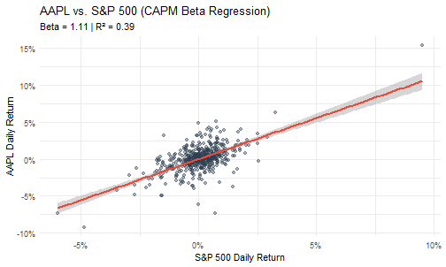
- Batch Beta Calculation for Indian Stocks:
in_basket <- c("TCS.NS", "INFY.NS", "RELIANCE.NS", "HDFCBANK.NS", "^NSEI")
in_prices <- yf_download_prices(in_basket, period = "2y", interval = "1d")
in_returns <- in_prices |>
group_by(symbol) |>
arrange(date, .by_group = TRUE) |>
mutate(ret = (adj_close / lag(adj_close)) - 1) |>
filter(!is.na(ret)) |>
ungroup() |>
select(date, symbol, ret) |>
pivot_wider(names_from = symbol, values_from = ret) |>
drop_na()
stocks <- setdiff(names(in_returns), c("date", "^NSEI"))
beta_table <- tibble(
symbol = stocks,
beta = sapply(stocks, function(s) cov(in_returns[[s]], in_returns[["^NSEI"]]) / var(in_returns[["^NSEI"]]))
) |> arrange(desc(beta))
print(beta_table)
#> # A tibble: 4 × 2
#> symbol beta
#> <chr> <dbl>
#> 1 HDFCBANK.NS 1.08
#> 2 RELIANCE.NS 1.04
#> 3 INFY.NS 0.923
#> 4 TCS.NS 0.84313. Portfolio Cumulative Returns & Wealth Index (Growth of $10,000)
Simulate a multi-asset portfolio, compound daily percentage returns over time, and compare the growth of a hypothetical $10,000 investment against the S&P 500 index.
tickers <- c("AAPL", "MSFT", "NVDA", "^GSPC")
prices <- yf_download_prices(tickers, period = "2y", interval = "1d")
returns_df <- prices |>
group_by(symbol) |>
arrange(date, .by_group = TRUE) |>
mutate(daily_return = (adj_close / lag(adj_close)) - 1) |>
filter(!is.na(daily_return)) |>
ungroup()
# Equal-weighted tech basket
portfolio_returns <- returns_df |>
filter(symbol != "^GSPC") |>
group_by(date) |>
summarise(daily_return = mean(daily_return), .groups = "drop") |>
mutate(symbol = "Equal-Weight Tech Portfolio")
benchmark_returns <- returns_df |>
filter(symbol == "^GSPC") |>
select(date, symbol, daily_return)
wealth_df <- bind_rows(portfolio_returns, benchmark_returns) |>
group_by(symbol) |>
arrange(date, .by_group = TRUE) |>
mutate(
cum_return = cumprod(1 + daily_return) - 1,
wealth_index = 10000 * cumprod(1 + daily_return)
) |>
ungroup()
wealth_df |>
group_by(symbol) |>
slice_tail(n = 1) |>
select(symbol, date, cum_return, wealth_index)
#> # A tibble: 2 × 4
#> # Groups: symbol [2]
#> symbol date cum_return wealth_index
#> <chr> <dttm> <dbl> <dbl>
#> 1 Equal-Weight Tech Portfolio 2026-08-24 13:30:00 0.474 14736.
#> 2 ^GSPC 2026-08-24 13:30:00 0.362 13625.Variations & Tips
- Growth of $10,000 Visualization:
ggplot(wealth_df, aes(x = date, y = wealth_index, color = symbol)) +
geom_line(linewidth = 0.9) +
scale_y_continuous(labels = label_dollar(prefix = "$")) +
labs(
title = "Growth of $10,000: Tech Portfolio vs. S&P 500",
x = "Date",
y = "Portfolio Value ($)",
color = "Strategy"
) +
theme_minimal() +
theme(legend.position = "bottom")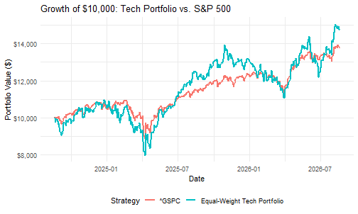
- Custom Asset Allocation Weights:
weights <- c("NVDA" = 0.50, "AAPL" = 0.30, "MSFT" = 0.20)
custom_port <- returns_df |>
filter(symbol %in% names(weights)) |>
mutate(weight = weights[symbol]) |>
group_by(date) |>
summarise(daily_return = sum(daily_return * weight), .groups = "drop") |>
mutate(
cum_return = cumprod(1 + daily_return) - 1,
wealth_index = 10000 * cumprod(1 + daily_return)
)14. Calculate Sharpe Ratio & Risk-Adjusted Metrics
Evaluate asset risk efficiency by computing annualized return, volatility, downside deviation, the Sharpe Ratio, and the Sortino Ratio relative to a risk-free benchmark rate ().
prices <- yf_download_prices(c("AAPL", "MSFT", "NVDA", "^GSPC"), period = "2y", interval = "1d")
rf_annual <- 0.04
rf_daily <- rf_annual / 252
performance_metrics <- prices |>
group_by(symbol) |>
arrange(date, .by_group = TRUE) |>
mutate(
daily_return = (adj_close / lag(adj_close)) - 1,
excess_return = daily_return - rf_daily
) |>
filter(!is.na(daily_return)) |>
summarise(
trading_days = n(),
annual_return = mean(daily_return) * 252,
annual_volatility = sd(daily_return) * sqrt(252),
sharpe_ratio = (annual_return - rf_annual) / annual_volatility,
downside_vol = sqrt(mean(pmin(excess_return, 0)^2)) * sqrt(252),
sortino_ratio = (annual_return - rf_annual) / downside_vol,
.groups = "drop"
) |>
arrange(desc(sharpe_ratio))
print(performance_metrics)
#> # A tibble: 4 × 7
#> symbol trading_days annual_return annual_volatility sharpe_ratio downside_vol
#> <chr> <int> <dbl> <dbl> <dbl> <dbl>
#> 1 ^GSPC 499 0.169 0.162 0.797 0.111
#> 2 NVDA 499 0.355 0.449 0.700 0.314
#> 3 AAPL 499 0.203 0.289 0.565 0.197
#> 4 MSFT 499 0.132 0.288 0.318 0.188
#> # ℹ 1 more variable: sortino_ratio <dbl>Variations & Tips
- Risk vs. Return Bubble Chart:
ggplot(performance_metrics, aes(x = annual_volatility, y = annual_return, color = symbol)) +
geom_point(aes(size = sharpe_ratio), alpha = 0.8) +
geom_text(aes(label = symbol), vjust = -1.2, fontface = "bold") +
geom_hline(yintercept = rf_annual, linetype = "dashed", color = "gray50") +
scale_x_continuous(labels = label_percent()) +
scale_y_continuous(labels = label_percent()) +
scale_size_continuous(range = c(4, 10), name = "Sharpe Ratio") +
labs(
title = "Risk vs. Return Profile",
subtitle = "Bubble size represents Sharpe Ratio",
x = "Annualized Risk / Volatility",
y = "Annualized Return"
) +
theme_minimal() +
theme(legend.position = "right")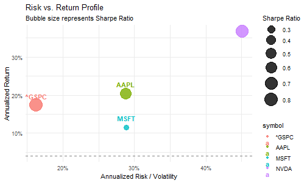
15. Compute Bollinger Bands & Volatility Envelopes
Construct 20-day volatility envelopes (), compute and Bandwidth indicators, and screen a universe of stocks for volatility breakouts.
# 1. Download prices for a single security
prices <- yf_download_prices("MSFT", period = "1y", interval = "1d")
# 2. Compute Bollinger Bands, %B, and Bandwidth
bb_df <- prices |>
filter(!is.na(adj_close)) |>
arrange(date) |>
mutate(
bb_middle = rollmeanr(adj_close, k = 20, fill = NA),
bb_sd = rollapplyr(adj_close, width = 20, FUN = sd, fill = NA),
bb_upper = bb_middle + (2 * bb_sd),
bb_lower = bb_middle - (2 * bb_sd),
bb_pct_b = (adj_close - bb_lower) / (bb_upper - bb_lower),
bandwidth = (bb_upper - bb_lower) / bb_middle
)
tail(bb_df |> select(date, adj_close, bb_lower, bb_middle, bb_upper, bb_pct_b, bandwidth), 6)
#> # A tibble: 6 × 7
#> date adj_close bb_lower bb_middle bb_upper bb_pct_b bandwidth
#> <dttm> <dbl> <dbl> <dbl> <dbl> <dbl> <dbl>
#> 1 2026-08-17 13:30:00 479. 352. 453. 554. 0.630 0.446
#> 2 2026-08-18 13:30:00 481. 359. 457. 556. 0.619 0.429
#> 3 2026-08-19 13:30:00 483. 369. 462. 555. 0.614 0.404
#> 4 2026-08-20 13:30:00 481. 382. 467. 552. 0.582 0.365
#> 5 2026-08-21 13:30:00 483. 397. 472. 547. 0.573 0.318
#> 6 2026-08-24 13:30:00 487. 413. 477. 541. 0.578 0.269Variations & Tips
- Bollinger Bands Ribbon Plot:
ggplot(filter(bb_df, !is.na(bb_upper)), aes(x = date)) +
geom_ribbon(aes(ymin = bb_lower, ymax = bb_upper), fill = "#e0e7ff", alpha = 0.6) +
geom_line(aes(y = bb_upper), color = "#4f46e5", linetype = "dashed", linewidth = 0.5) +
geom_line(aes(y = bb_middle), color = "#3b82f6", linewidth = 0.8) +
geom_line(aes(y = bb_lower), color = "#4f46e5", linetype = "dashed", linewidth = 0.5) +
geom_line(aes(y = adj_close), color = "#1e293b", linewidth = 0.7) +
labs(
title = "MSFT Price with 20-Day Bollinger Bands (±2σ)",
subtitle = "Shaded channel represents standard volatility envelope",
x = "Date",
y = "Adjusted Price (USD)"
) +
theme_minimal()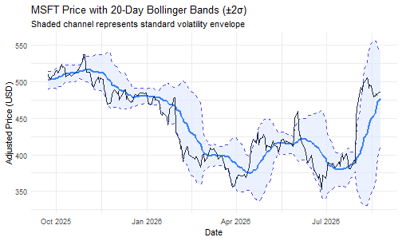
- Multi-Ticker Volatility Breakout Screener:
watchlist <- c("AAPL", "MSFT", "NVDA", "GOOGL", "AMZN")
screener_results <- yf_download_prices(watchlist, period = "6mo", interval = "1d") |>
filter(!is.na(adj_close) & !is.na(close)) |>
group_by(symbol) |>
arrange(date, .by_group = TRUE) |>
mutate(
mb = rollmeanr(adj_close, k = 20, fill = NA),
sd = rollapplyr(adj_close, width = 20, FUN = sd, fill = NA),
ub = mb + (2 * sd),
lb = mb - (2 * sd),
pct_b = (adj_close - lb) / (ub - lb)
) |>
filter(!is.na(pct_b)) |>
slice_tail(n = 1) |>
ungroup() |>
mutate(
status = case_when(
pct_b > 1.0 ~ "Above Upper Band (Overbought/Breakout)",
pct_b < 0.0 ~ "Below Lower Band (Oversold/Breakdown)",
TRUE ~ "Within Normal Bands"
)
) |>
select(symbol, date, close = adj_close, ub, lb, pct_b, status)
print(screener_results)
#> # A tibble: 5 × 7
#> symbol date close ub lb pct_b status
#> <chr> <dttm> <dbl> <dbl> <dbl> <dbl> <chr>
#> 1 AAPL 2026-08-24 13:30:00 310. 335. 291. 0.442 Within Normal Bands
#> 2 AMZN 2026-08-24 13:30:00 262. 294. 232. 0.486 Within Normal Bands
#> 3 GOOGL 2026-08-24 13:30:00 348. 373. 326. 0.470 Within Normal Bands
#> 4 MSFT 2026-08-24 13:30:00 487. 541. 413. 0.578 Within Normal Bands
#> 5 NVDA 2026-08-24 13:30:00 208. 235. 192. 0.377 Within Normal Bands